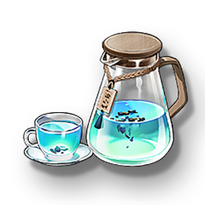

Sanqing Tea
Supplies

Increases the maximum health of all Resonators in the team by 15% for 30 minutes, only effective for the player's Character in multiplayer games.
The Sanqing tea specially provided by Yuanwu Boxing Gym, clears the spleen, lungs, and worries.
After practicing boxing, having a cup can promote blood circulation, remove blood stasis, and nourish the Qi.
A set of boxing, a cup of tea, a sense of relaxation from the inside out envelops the whole body, allowing people to temporarily forget the worldly calculations and pursuits.